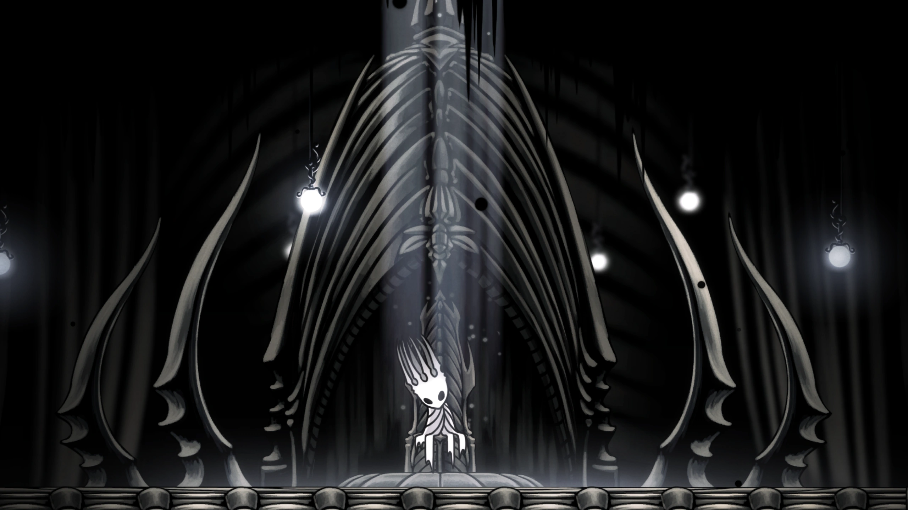
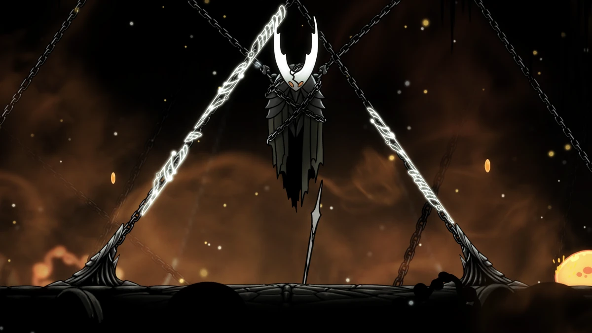
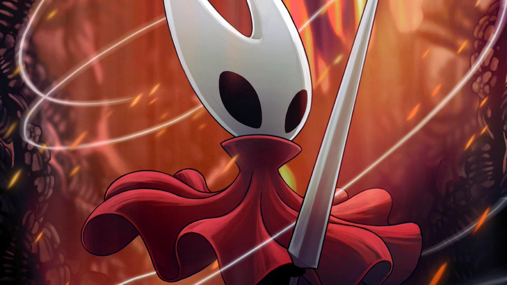
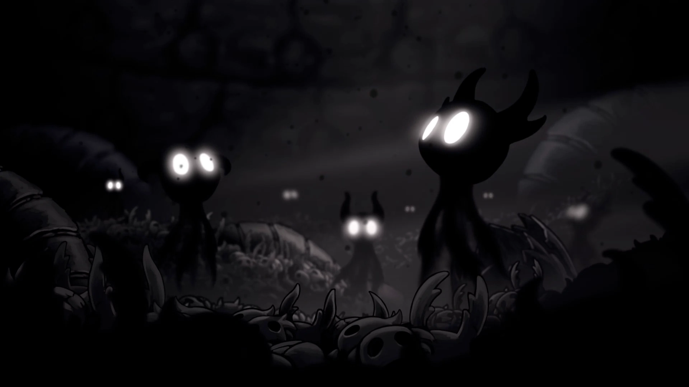
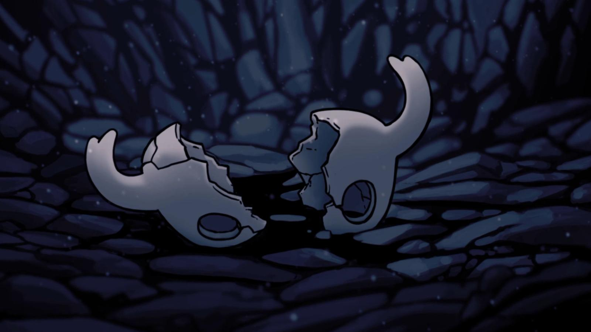

Primórdios, o Vazio e a Luz

Era uma vez um reino onde a ordem reinava absoluta. Hallownest erguia-se majestoso sob o comando do Rei Pálido,
um ser de poder incomensurável que não nasceu como rei, mas como Wyrm, uma criatura colossal, antiga como o
próprio tempo.
Cansado de sua forma imensa, ele se desfez dela, emergindo como uma figura esguia e luminosa, trazendo consigo
um dom raro: a consciência. Aos insetos simples que rastejavam nas sombras, ele ofereceu mentes, sonhos e um
propósito.
Assim nasceu a Cidade das Lágrimas, com suas torres reluzentes e fontes eternas, um símbolo de um futuro que
nunca morreria.
Mas toda luz projeta uma sombra. Enquanto o Rei Pálido moldava seu paraíso, algo mais antigo despertava. A
Radiância, uma entidade de luz dourada e sonhos fervorosos, havia sido a primeira a governar os insetos de
Hallownest.

Ela era seu sol, sua deusa, até que o Rei a destronou, roubando a adoração que a sustentava. Abandonada, ela se
recolheu ao Reino dos Sonhos, mas sua ira não descansou.
Dela nasceu a Infecção, uma praga alaranjada que rastejava como fogo líquido, queimando as mentes dos habitantes
e transformando-os em cascas selvagens. O reino que o Rei Pálido jurou proteger começou a desmoronar, e com ele,
sua promessa de eternidade.
O pequeno cavaleiro e o chamado silencioso
No meio desse caos silencioso, ele apareceu: o Cavaleiro. Pequeno, com um chifre quebrado e um olhar vazio, ele
não fala, mas carrega uma presença que ressoa como um tambor nas profundezas.
Quem é ele? Um andarilho? Um salvador? Não sabemos ao certo, mas o que o trouxe a Hallownest foi um chamado, um
sussurro que ecoava de algum lugar além das ruínas, talvez do próprio Abismo onde ele nasceu.
O Cavaleiro é um Vaso, uma das muitas criaturas forjadas pelo Rei Pálido no Vazio, uma substância negra e viva
que pulsa como um coração esquecido. Ele não era o único, milhares como ele foram criados, testados e
descartados, tudo para encontrar um que fosse completamente vazio, para assim selar a Radiância.

O Cavaleiro Vazio: o herói condenado
No fundo do reino, preso na Câmara Negra, está o Cavaleiro Vazio. Ele foi o escolhido, o Vaso perfeito que o Rei
Pálido moldou com cuidado e esperança. Diferente dos outros, jogados como lixo no Abismo, ele foi levado ao
Palácio Branco, treinado para carregar o fardo que nenhum inseto comum poderia suportar.
Quando a Infecção se espalhou, o Rei o selou com a Radiância dentro de si, um sacrifício para salvar Hallownest.
Três Sonhadoras ergueram suas máscaras, e o Cavaleiro Vazio foi acorrentado, sua pequena forma tremendo enquanto
a
luz alaranjada lutava para escapar.

Mas o Rei cometeu um erro. Ele amou o Cavaleiro Vazio como um filho, e esse amor, essa faísca de emoção, tornou
o Vaso impuro, porque o Cavaleiro também amou o seu pai. A Radiância, astuta e implacável, encontrou essa
brecha. Ela sussurrou em sua mente, corroeu seu
vazio, e a Infecção começou a vazar, lenta e inexorável.
Quando o Cavaleiro (jogador) o encontra, o Cavaleiro Vazio é uma ruína viva, seu corpo rachado jorrando a praga que ele
deveria conter. O embate entre eles é mais do que uma batalha, é um lamento, um grito de dois irmãos presos na
mesma tragédia. O Cavaleiro (jogador) ergue seu prego, e o som do metal contra metal ecoa como o último suspiro de uma
era.
A Radiância: a luz que consome
E então, com o Ferrão dos Sonhos em mãos, o Cavaleiro mergulha mais fundo, não no chão, mas nos sonhos. Lá, ele
encontra a Radiância em toda sua glória terrível. Ela é um sol furioso, suas asas de mariposa pulsando com luz
cegante, seus olhos queimando com a raiva de uma deusa traída.
Antes do Rei Pálido, ela era tudo: a fonte dos sonhos, a mãe dos insetos, a luz que guiava suas mentes frágeis.
Mas quando eles a esqueceram, escolhendo a ordem fria do Rei em vez de sua chama selvagem, ela se tornou um eco
vingativo.
A Infecção não é apenas uma doença, é o grito da Radiância, uma tentativa de recuperar tudo o que foi perdido. Ela
não quer destruir Hallownest, ela quer que o reino se curve a ela novamente. Na batalha final, o Cavaleiro
enfrenta essa força primordial, mas ele não está sozinho.

O Vazio dentro dele desperta, e a sombra do Cavaleiro Vazio se junta ao combate, uma dança de escuridão contra
luz. Quando o golpe final é dado, a Radiância se desfaz em fragmentos dourados, e o silêncio retorna. Mas será
que ela realmente se foi?
Hornet: a guardiã solitária
Entre os escombros, Hornet permanece. Filha do Rei Pálido e de Herrah, a Besta, ela é mais do que uma guerreira,
ela é o último fio de esperança em um reino desfeito. Seu olhar é firme, mas seus silêncios carregam o peso de
quem viu demais. Ela não serve ao Rei nem à Radiância, ela serve a Hallownest, ou ao que resta dele.
Quando o Cavaleiro a encontra, ela o testa, como se quisesse saber se ele é digno de carregar o fardo que seu
pai deixou para trás. E no fim, dependendo do caminho que ele escolhe, ela o vê partir ou desaparecer.
Os finais são como notas em uma melodia inacabada. Em um, o Cavaleiro toma o lugar do Hollow Knight, selando a
Radiância em seu próprio corpo, um eco do sacrifício que veio antes. Em outro, ele destrói a Radiância com o
poder do Vazio, libertando Hallownest da Infecção, mas desaparecendo nas sombras, deixando Hornet sozinha.
Há ainda sussurros de um destino maior, nas expansões como Godmaster, onde o Cavaleiro ascende entre os deuses,
mas essas são histórias para outro dia.

O Abismo: o coração negro de tudo
E então, há o Abismo. Onde as máscaras quebradas dos Vasos caídos formam montanhas de
arrependimento. Aqui, o Rei Pálido criou seus filhos, mergulhando no Vazio para forjar armas contra a Radiância.
O Vazio é mais do que uma substância, é uma força viva, um mar de escuridão que sussurra promessas de poder e
silêncio.
O Cavaleiro, ao abraçar o Coração do Vazio, torna-se seu arauto, uma sombra que desafia tanto a luz do Rei
quanto a chama da Radiância.
O que é o Vazio, afinal? Um inimigo? Um aliado? Talvez seja a verdadeira essência de Hallownest, um reflexo do
que acontece quando os sonhos morrem e os reis falham. No Abismo, o Cavaleiro encontra sua origem — e talvez seu
fim.

O fim de uma canção
Hallownest não é mais o que foi. A Cidade das Lágrimas chora eternamente, os Sonhadores dormem em seus túmulos,
e o Rei Pálido desapareceu, seu Palácio Branco perdido nos sonhos. O Cavaleiro, pequeno e silencioso, deixou sua
marca, mas o que resta é um vazio que ecoa. Hornet espera, talvez por um novo começo, talvez por um caminho onde
sua própria história será contada.
Esta é a saga de Hollow Knight, um conto de insetos e deuses, de luz e sombra, de um reino que caiu porque ousou
sonhar alto demais. Feche os olhos e ouça: o som de um prego contra a pedra, o sussurro do Vazio, o lamento de
uma deusa esquecida. Hallownest vive em nós, um eco que nunca silencia.
